正文:
超级喜欢包臀连衣裙，它的性能就是突出曲线，我觉得凹凸有致才是女人的美。 不多说直接上图啦 ☺
酒红色褶皱荡领可以适当的遮挡小肚子，这个比较OL
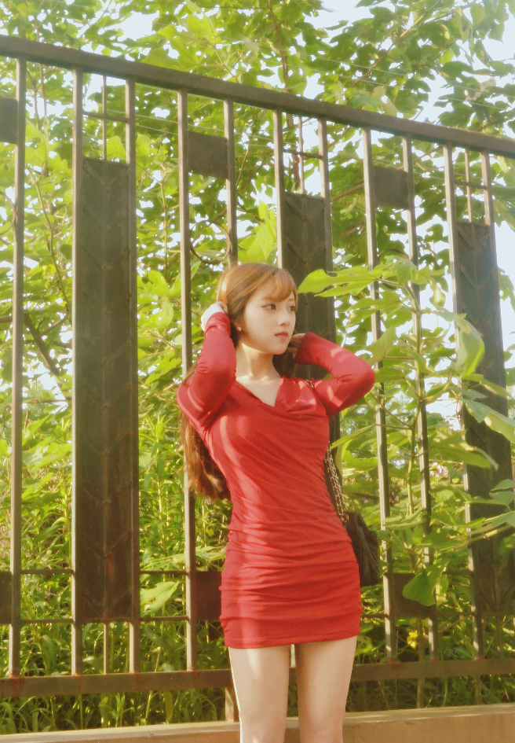
藏蓝色的小礼服群，略低胸，不规则鱼尾边下摆使得不那么沉闷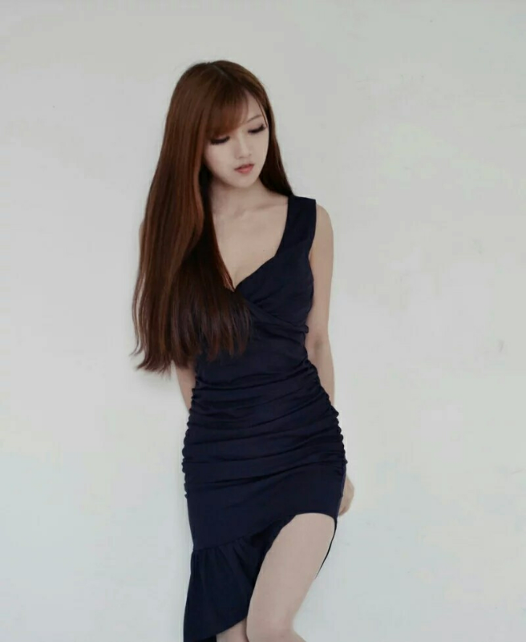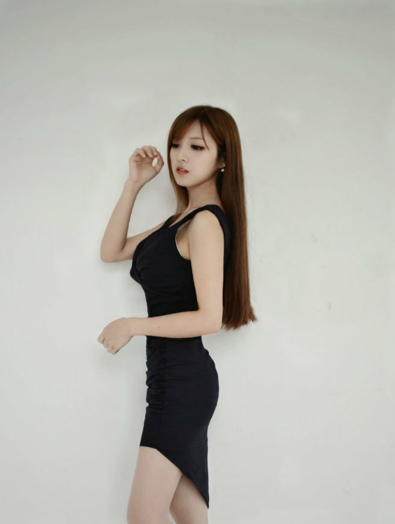酒红色和孔雀蓝这款比较复古风了，不过吊带荷叶边又很甜美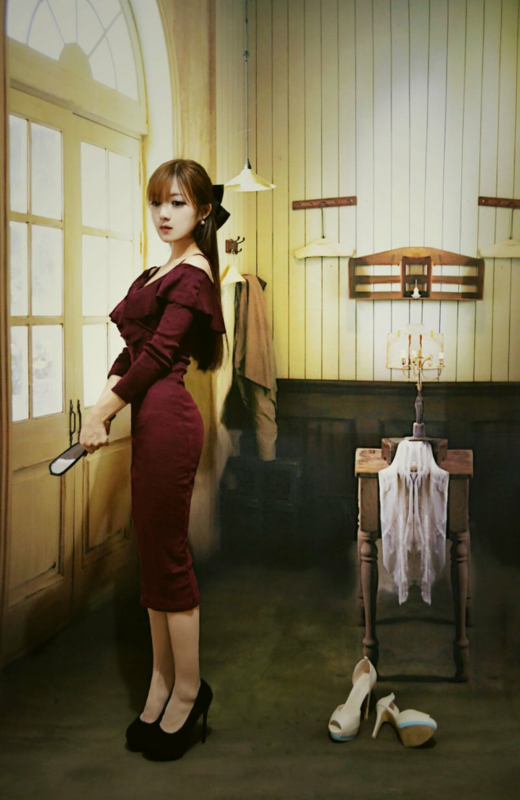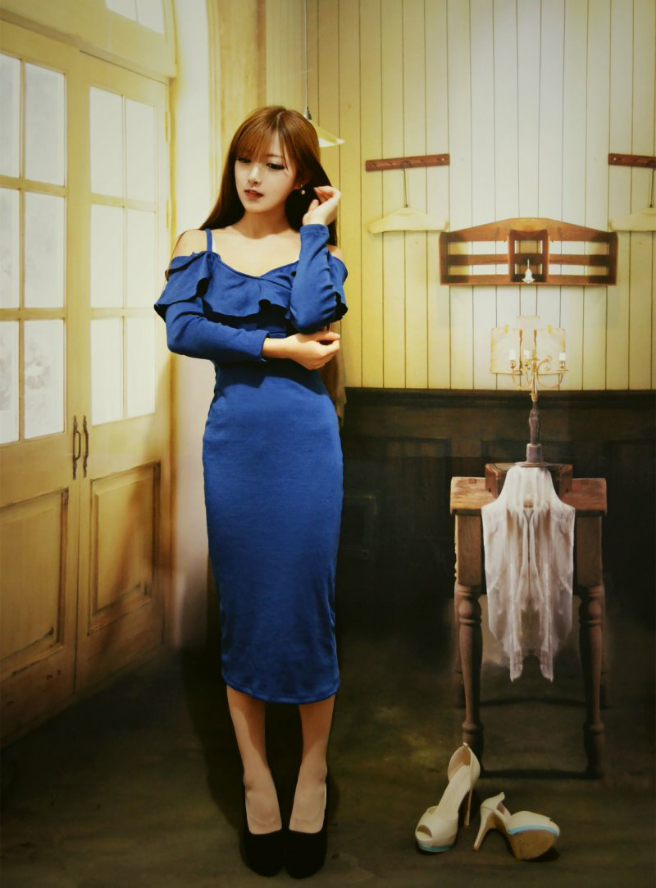
条纹的比较小清新啦，搭配不同类型的鞋子都会有不同的感觉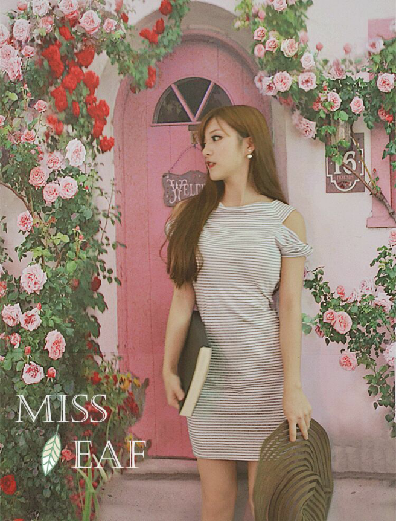
半高领削肩针织裙，我特别特别喜欢针织的衣服。
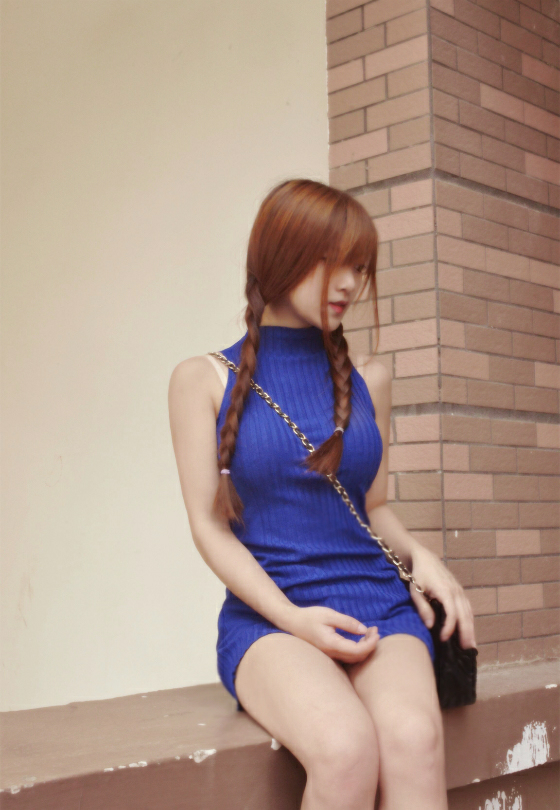
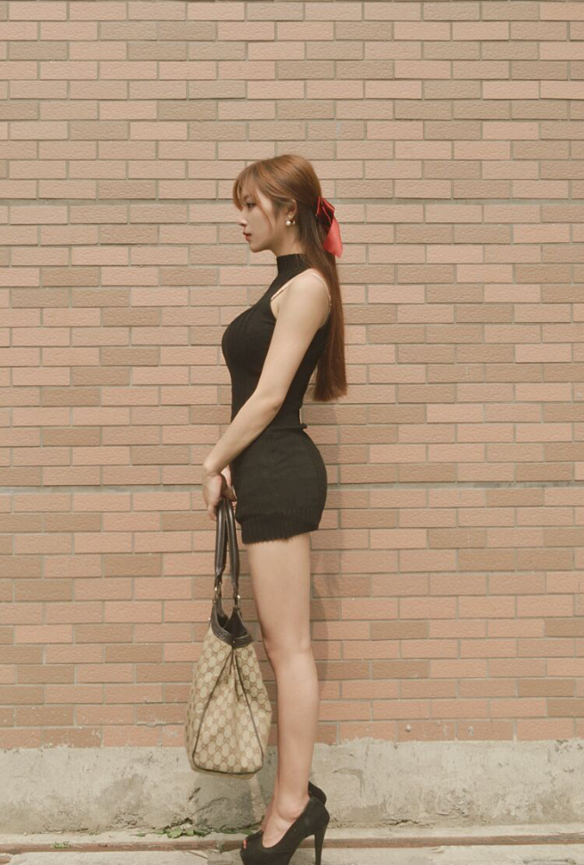
无袖针织连衣裙
可能包臀裙看起来会比较性感，太贴身又容易走光不太适合日常，所以我一般都会搭配稍微文艺，小清新的包来均衡。
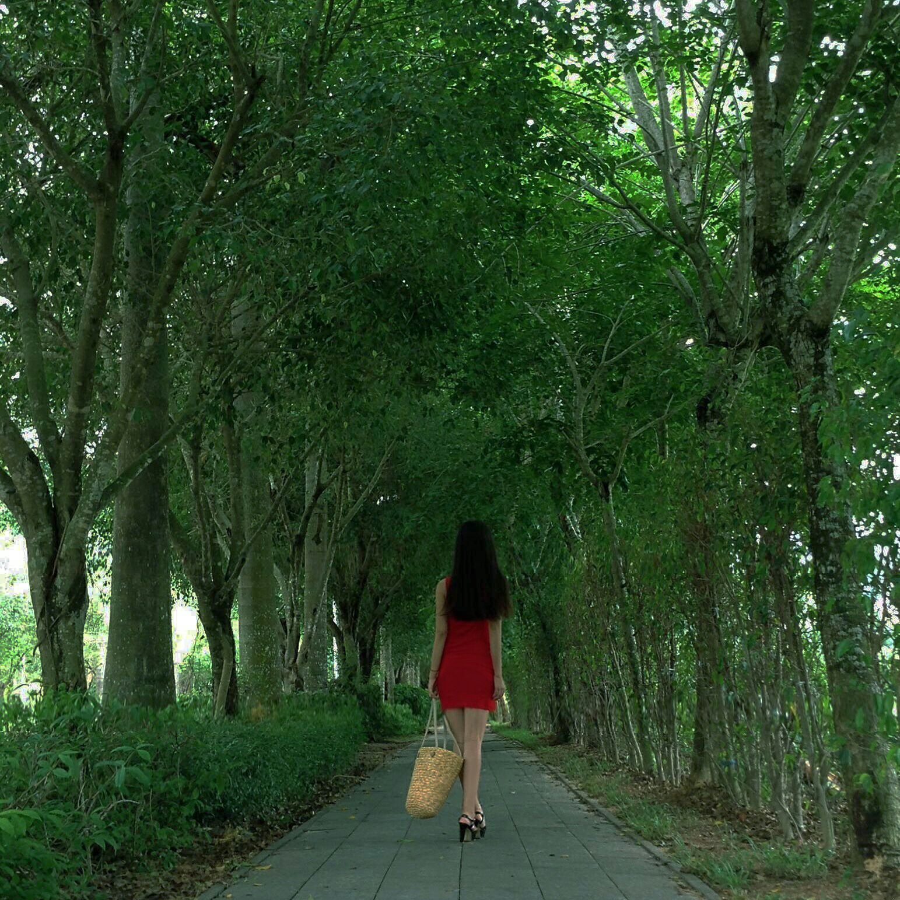
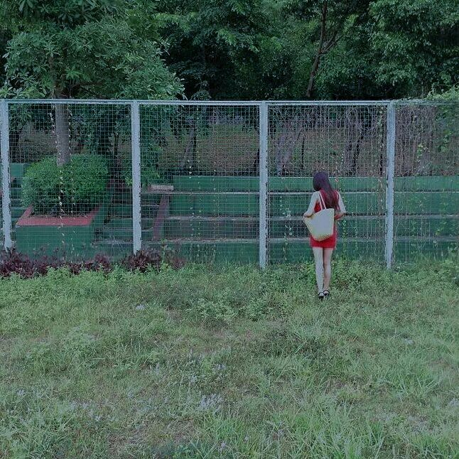
淡粉色泡泡袖，淡粉色淑女风
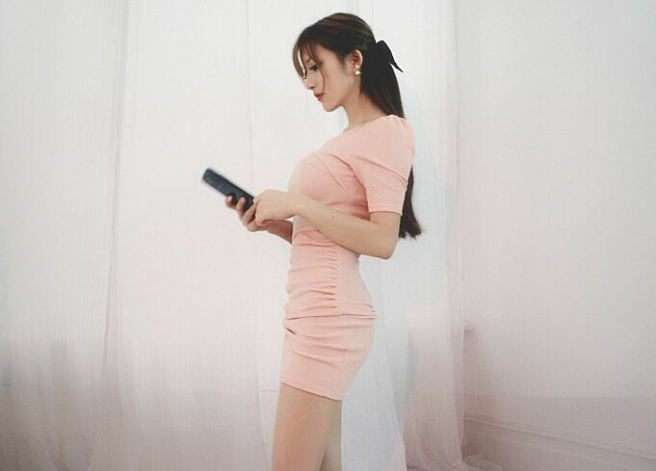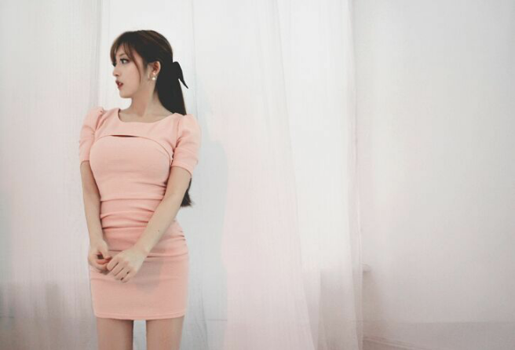
吊带长款修身印花裙
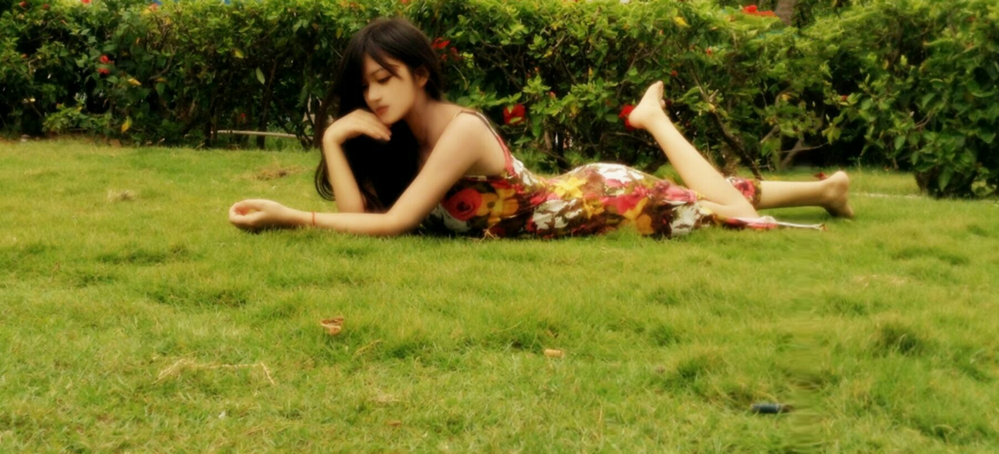
我拍照真的很呆板不喜欢看镜头不会摆姿势~~( ﹁ ﹁ ) ~